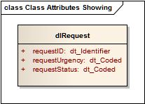

Datatypes are applied as Classifiers to the Attribute(s) of a UML Class or UML Object, to further define the specification
for the data that is to be processed
class attributes with datatypes
class attributes with datatypes
Datatypes applied to the Attributes for a Class
The purpose of a datatype is to define the specification for the values to be applied to a class or object-instance attribute,
and to which it MUST conform. This reduces the scope for the incorrect application of values against attributes.
Datatypes are UML Classifiers, and may either be simple (‘primitive’), specialised or ‘compound’ (complex) in nature. Generic
datatypes are typically made available as templates for reuse across different diagrams within a model (these are typically
held within a designated model package).
Simple or ‘primitive’ datatypes could include ‘integer’, ‘boolean’ or ‘string’. A ‘Compound Datatype’ (or ‘Complex Datatype’)
may have several attributes of its own in order to define a complex specification. A datatype specification may also allow
a ‘null’ or no value (as distinct from a ‘zero’ value) to be applied.
An example of how datatypes work might be an attribute that records ‘time’ — a value of ’10:45’ may be valid but ‘orange’
would be invalid. The datatype specification supports the evaluation of the applied value upon processing.
The construction of UML Constraints are defined by the specific Core Notations for each application.
Null Value Datatypesspacer
text
Where an attribute needs to accommodate a specific instance of no value, this may be represented as a ‘null’ value — a null
value is not the same as a zero value.
NOTE: - Where applying datatypes in accordance with the Methodologies, a defined range of ’null value’ flavours are defined for
the datatypes held within the Generic Datatypes package of the Analysis Model Template.
There are no distinct Core Notations for this subject.